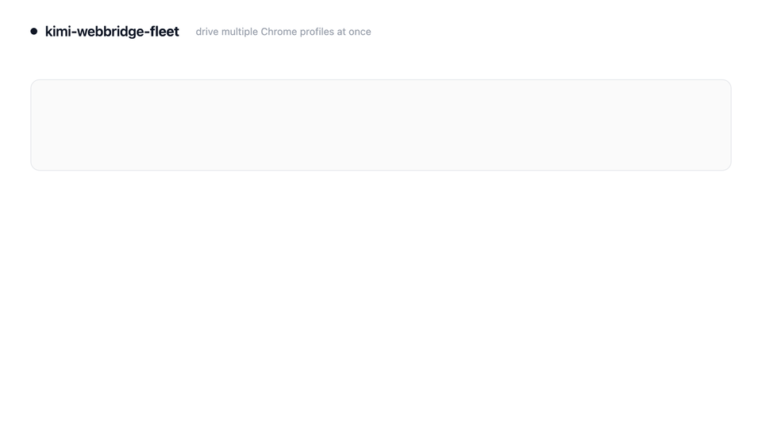
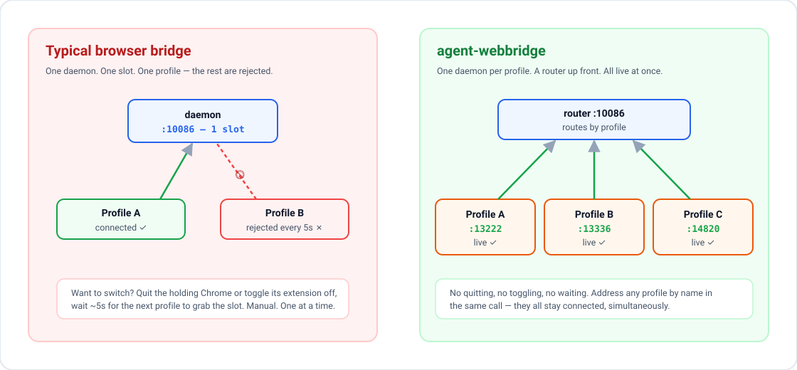

kimi-webbridge-fleet is an advanced, multiple-profile browser scraping and automation engine. Unlock concurrent data collection across several valid Chrome profiles and Google logins at once, executing parallel scraping routines seamlessly without manual session juggling.
Active Google Chrome profile instances and live daemon statuses.
| Profile ID | Browser Target | Connection Status | Avg Latency |
|---|---|---|---|
| "Work" | Google Workspace Account | Connected | 42ms |
| "Personal" | Personal Google Account | Connected | 36ms |
| "Developer" | Admin Console Profile | Connected | 51ms |
Perform concurrent web scraping, DOM queries, and file collection across separate logged-in profiles. Perfect for compiling combined reports from multiple Search Consoles, reading multiple Gmail accounts, or downloading files from different drives simultaneously.

Assemble a command body for the router to forward.
Press "Transmit Command to Fleet" to simulate the network routing...

10086. It accepts standard HTTP commands, extracts the "profile" parameter, and forwards the payload transparently to the corresponding browser daemon.
kimi-webbridge-fleet overcomes this by running one stock daemon per profile and placing a router on 10086. Every profile stays connected simultaneously, allowing you to select the target by passing a "profile" field in the request payload.
kimi-webbridge-fleet, which does so without needing to patch the underlying daemon binaries or rewrite the extension code.
10086 is occupied, and a single daemon process will only connect to one browser extension at a time. The fleet layer sidesteps these constraints by assigning isolated local directories and distinct ports to each daemon process, keeping the central port free for the proxy router.
chrome://extensions in the active profile and toggle the WebBridge extension switch to release the slot. The fleet's kwb connect command automates this by directly modifying the Chrome extension's on-disk Local Storage LevelDB files (while Chrome is quit), updating the destination URL instantly with zero manual clicks.
kimi-webbridge processes and writes to standard Chrome user directories. It does not distribute, compile, or contain any official Kimi WebBridge binary code.